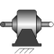
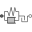

GearboxRealistic model of a gearbox (based on LossyGear) |

|
Diagram
{kind=link}
Information
This information is part of the Modelica Standard Library maintained by the Modelica Association.
This component models the essential effects of a gearbox, in particular
- in component lossyGear
- gear efficiency due to friction between the teeth
- bearing friction
- in component elastoBacklash
- gear elasticity
- damping
- backlash
The inertia of the gear wheels is not modeled. If necessary, inertia has to be taken into account by connecting components of model Inertia to the left and/or the right flange of component Gearbox.
Parameters (9)
| useSupport |
Value: false Type: Boolean Description: = true, if support flange enabled, otherwise implicitly grounded |
|---|---|
| useHeatPort |
Value: false Type: Boolean Description: = true, if HeatPort is enabled |
| T |
Value: 293.15 Type: Temperature (K) Description: Fixed device temperature if useHeatPort = false |
| ratio |
Value: Type: Real Description: Transmission ratio (flange_a.phi/flange_b.phi) |
| lossTable |
Value: [0, 1, 1, 0, 0] Type: Real[:,5] Description: Array for mesh efficiencies and bearing friction depending on speed (see docu of LossyGear) |
| c |
Value: Type: RotationalSpringConstant (N·m/rad) Description: Gear elasticity (spring constant) |
| d |
Value: Type: RotationalDampingConstant (N·m·s/rad) Description: Gear damping (relative damping) |
| b |
Value: 0 Type: Angle (rad) Description: Total backlash |
| stateSelect |
Value: StateSelect.prefer Type: StateSelect Description: Priority to use phi_rel and w_rel as states |
Connectors (4)
| flange_a |
Type: Flange_a Description: Flange of left shaft |
|
|---|---|---|
| flange_b |
Type: Flange_b Description: Flange of right shaft |
|
| support |
Type: Support Description: Support/housing of component |
|
| heatPort |
Type: HeatPort_a Description: Optional port to which dissipated losses are transported in form of heat |
Components (4)
| fixed |
Type: Fixed Description: Fixed support/housing, if not useSupport |
|
|---|---|---|
| fixedTemperature |
Type: FixedTemperature |
|
| lossyGear |
Type: LossyGear |
|
|  | elastoBacklash |
Type: ElastoBacklash |
Used in Examples (1)
|
Modelica.Blocks.Examples.Noise Demonstrates how to model measurement noise in an actuator |